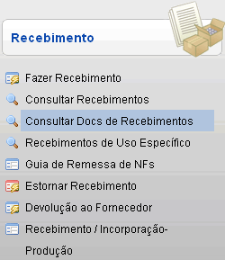
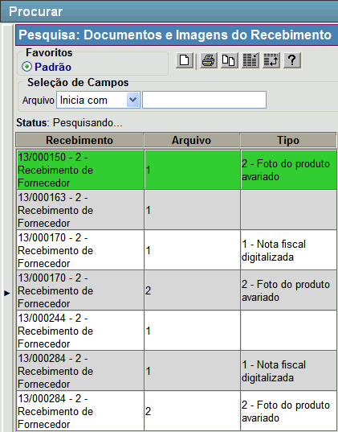

Consultar Recebimentos [ Voltar ]Utilize este formulário para localizar e consultar recebimentos já realizados.Para acessá-lo, vá ao menu "Recebimento - Recebimento" da tela inicial e clique em "Consultar Docs de Recebimentos". 
Ao clicar no menu, a seguinte tela será exibida:  1° Passo: selecione com um clique o recebimento desejado. Assim que selecionado, o registro dos documentos será aberto na tela "Documentos e Imagens do Recebimento" e serão exibidos todos os dados do mesmo. Para outras informações sobre documentos e imagens de recebimento, favor ver o manual Fazer Recebimento. |